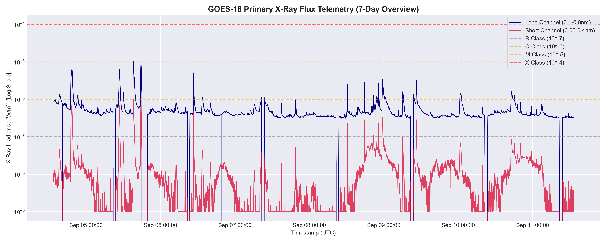
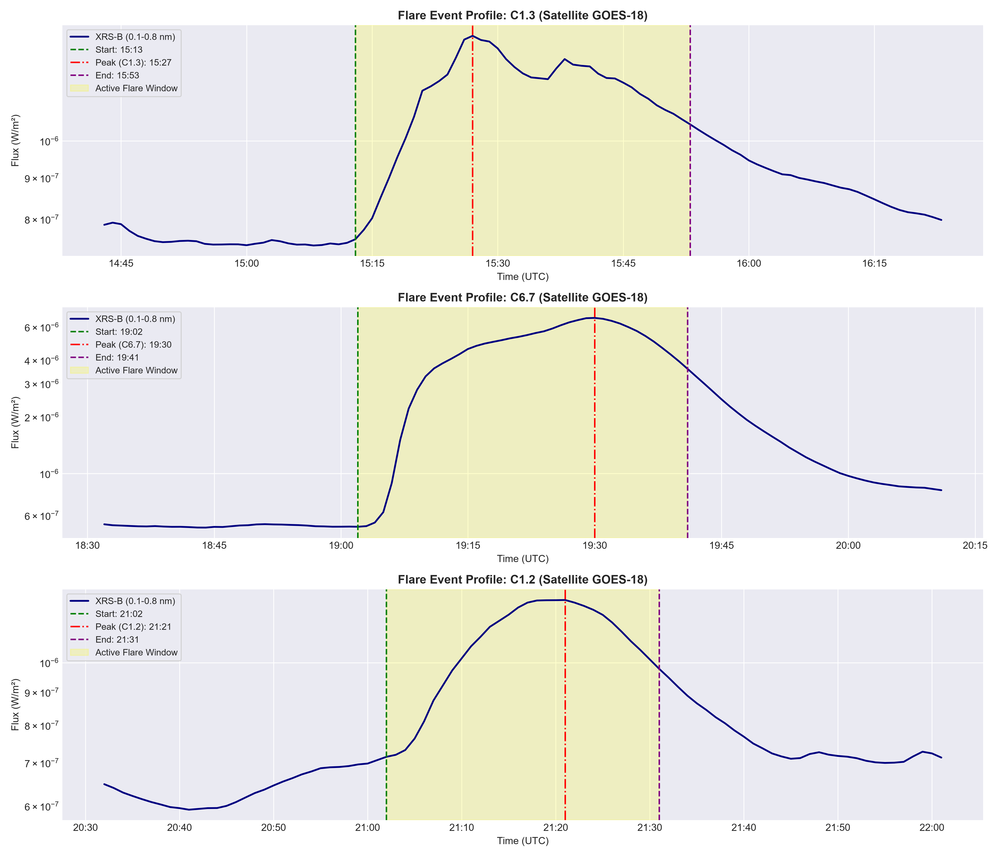
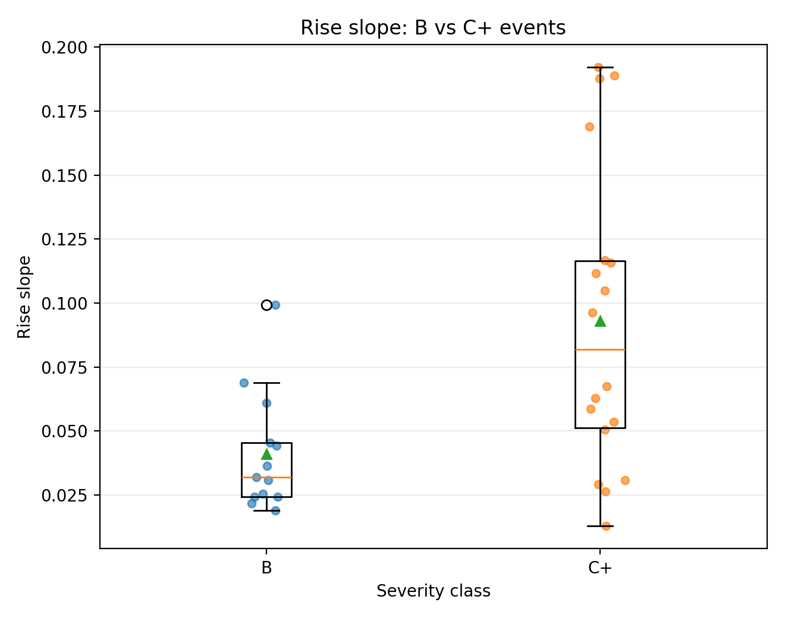
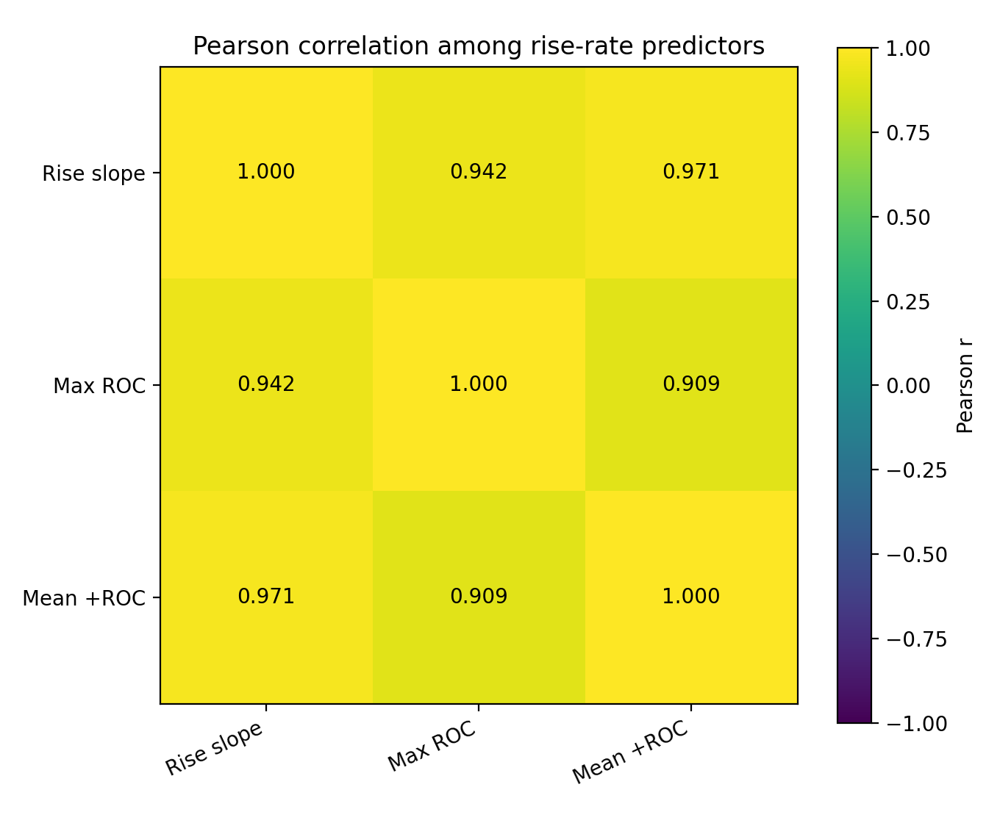

Detection
Did something unusual happen?
We compare each new observation with recent solar background behavior.
STATISTICS FOR MACHINE LEARNING · PBL
A guided scientific story built from real NOAA/GOES soft X-ray time-series data.
We begin with a physical measurement from the Sun, use statistics to define recent normal behavior, detect sustained unusual activity, compare events with NOAA records, describe event shape numerically, and finally evaluate a leakage-controlled B vs C+ severity-nowcasting experiment.
Did something unusual happen?
We compare each new observation with recent solar background behavior.
At the observed peak, is this event B or C+?
This is the supervised classification task used in the final experiment.
Will a flare happen before its observed signature?
Not the task in this project.
GOES repeatedly measures soft X-ray flux from the Sun. Those measurements, ordered by time, form the signal we analyze.
a timestamp + one measured X-ray flux value.
The main analysis channel is GOES XRS-B, the 0.1–0.8 nm soft X-ray band used by NOAA for flare classification. Flux is measured in W/m².

Every later calculation depends on the sequence of observations.
Non-positive or invalid flux values cannot safely enter logarithmic calculations.
Small gaps may be interpolated conservatively in log space.
Long gaps remain missing so we do not invent a false solar signal.
“Where is the recent signal centered?”
x̄ = Σxᵢ / n
“What is the middle recent value?”
More resistant to extreme flare values.
“How much does recent background normally vary?”
s = √[Σ(xᵢ−x̄)²/(n−1)]
“How much does it vary without allowing extreme points to dominate?”
MAD = median(|xᵢ−median(x)|)
For values 4, 5, 4, 5, 40, the large final value pulls the mean strongly upward, while the median stays near the normal cluster. That is the intuition behind using median/MAD alongside mean/SD.
One average for an entire observation period cannot represent what is normal at every minute.
Look back
Use recent earlier observations.
Estimate
Compute recent center and spread.
Compare
Judge the current observation against that background.
Move forward
Repeat at the next minute.
How far is the current value from recent ordinary background?
z = (x − μ) / σ
Same question, using median and MAD instead of mean and SD.
zᵣ = (x − median) / MADscaled
How quickly did the X-ray signal change from one observation to the next?
Δ log₁₀(flux)
Is the signal showing a sustained directional rise?
x ≈ β₀ + β₁t
A single high score may be noise. Requiring several consecutive unusual observations reduces isolated false triggers.
Contiguous detected points are converted into a discrete event with a start, observed peak and end.

statistically detected events
matched detections
The classifier does not receive a picture of the flare. We measure interpretable properties of its rise.
How steeply did the event rise?
What was the fastest observed rise?
How strong was the positive rise on average?
How long did START→PEAK take?
What X-ray background did the event rise from?


Background + rise information through the observed peak.
max_roc and mean_pos_roc are computed from START→PEAK only.
NOAA flare class itself is defined from peak X-ray flux. Supplying peak flux would expose the target definition.
NOAA B-class events.
NOAA C and M events combined because the sample is small.
Estimates a probability of C+ from the five predictors.
Uses a sequence of feature-based if–then splits.
Combines votes from many decision trees.
| Development model | Macro F1 | Balanced Accuracy |
|---|---|---|
| Logistic Regression | 1.000 | 1.000 |
| Decision Tree | 0.778 | 0.900 |
| Random Forest | 0.778 | 0.900 |
The predefined development procedure froze Logistic Regression for the final test.
| Pred B | Pred C+ | |
|---|---|---|
| Actual B | 5 | 0 |
| Actual C+ | 0 | 2 |
in this frozen final holdout
The training classes are perfectly linearly separable, so ordinary Logistic Regression coefficients are not stable finite effect estimates.
rise_slope, max_roc and mean_pos_roc describe related rise behavior and are strongly correlated.
The experiment has not been validated on a separate solar-cycle interval or another independent population.
The website explains the project. Shiny lets us interact with the frozen scientific outputs.
Loads processed project artifacts, lets the presenter inspect events and graphs, and explains the frozen experiment interactively.
It does not silently retrain the models or alter detector thresholds during the presentation.
Undergraduate statistical proof-of-concept for solar-event detection and severity nowcasting.